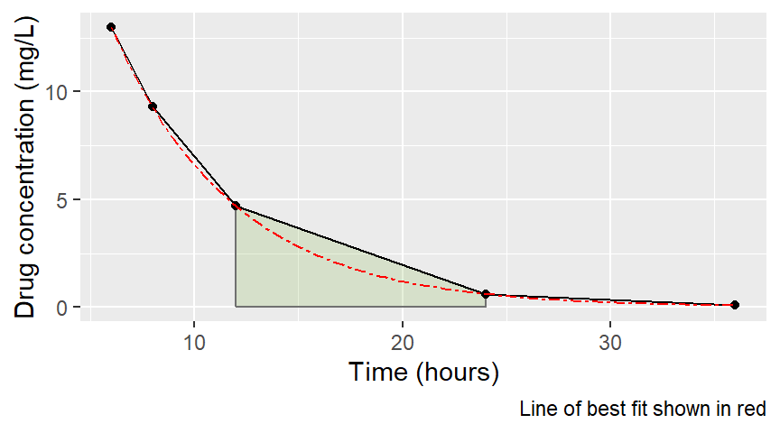

Introduction to non-compartmental analysis using ‘R’
Introduction
In this session, we will build on our knowledge of coding and use ‘R’ to estimate some basic pharmacokinetic parameters using what is known as non-compartmental techniques.
Learning outcomes
By the end of this week you should be able to:
- Use R to undertake basic, descriptive (non-compartmental) analysis of some pharmacokinetic data to estimate
- \(C_{max}\)
- \(T_{max}\)
- \(AUC_{0-t}\)
- Bioavailability (\(F\))
- Describe the linear trapezoidal method of estimating \(AUC\)
- State one disadvantage of this method
- Explain an alternative method that avoids this disadvantage
Accessing R and RStudio on a University computer
The two key tools for this session will be R and RStudio. These are free, open source pieces of software. They are both available on the University computers, but you may choose to download them onto your personal laptop or home computer.
When you are using a University computer, you need to access RStudio via the University servers.
The link for this is here. I suggest you save this as a ‘favourite’.
Some reminders from last time:
Setting the working directory
Last session, I recommended that you make a folder on your personal (H:) drive to contain all your work for this module. You will need to remember (or check) what you called it.
You can setwd() using your mouse and clicking on ‘session’ and ‘set working directory’. Alternatively (and more rapidly), you can use R code and the setwd() function.
setwd()
setwd("INSERT YOUR FILE PATH HERE")
# or if on the server setwd("~/your_file_name/sub_folder_if_used/") Packages you need for this session
Link your path using the following line of code and then call library(tidyverse).
.libPaths( c( .libPaths(),
"/homes/dlonsdale-pharmacokinetics/sghms/bms/shares/Advanced-Pharmacokinetics/4.4.2/library") )
#note that you need the '.' before 'libPaths'
library(tidyverse)Accessing data for this session
For this session we will be using PK data for an anti-epileptic. 6 participants were given an IV dose and then one week later they were given an oral dose. Drug concentrations were measured.
You can download the data for this session directly from GitHub. There are two files. Copy and paste my code.
IV<-read.csv("https://raw.githubusercontent.com/dlonsdal/non_compartmental/main/docs/PK_IV.csv")
ORAL<-read.csv("https://raw.githubusercontent.com/dlonsdal/non_compartmental/main/docs/PK_oral.csv")Task: Plot the data for the IV and oral data.
Hint: Review the notes from the last session and use some ggplot() code
Estimating \(C_{max}\)
Remember that \(C_{max}\) is observed from our data. We find the max value per participant and report it. We actually did this in the last session.
Tasks:
- Estimate \(C_{max}\) for the IV and oral data
- Estimate the mean \(C_{max}\) for the IV and oral data
Advanced: Output both IV and oral data together in one table
Estimating \(T_{max}\)
This is a little more tricky. We need to get R to find \(C_{max}\) and then keep the associated value for time.
Try a Google search for this. Something like ‘using group by to get the value corresponding to the max value of another column’.
Task: Estimate \(T_{max}\) for the IV and oral data
Estimating the area under the curve (\(AUC_{0-t}\))
\(AUC_{0-t}\) is the area under the time concentration curve from \(time=0\) to \(time=t\) (\(t\) will usually be the time of the last observed sample but it doesnt have to be). In non-compartmental analysis, this is often estimated using a method that breaks up the time concentration data into small chunks, estimates the area under each chunk and adds them together. The most straightforward way of doing this is using the trapezoid method.

Figure 1: Participant ‘A’ oral concentration-time profile, with trapezoids indicated in colour
To calculate the area under the curve of the trapezoid ABCD in Figure 1 we use the equation for the area of a trapezoid. \[Area = \frac{1}{2}*(height_{1,AB}+height_{2,CD})*base_{AD}\] The two heights correspond to concentrations B and C and the base is the distance A to D (the change in time \(\Delta t\)) in Figure 1. So more fully for this example, where height is replaced with concentration \((C)\): \[AUC_{0-8} = \sum_{t=0}^{t=8} \Delta t\frac{(C_1+C_2)}{2}\]
Fortunately,R has an inbuilt function that allows us to calculate the \(AUC\). The handily named AUC() function. You need to provide it with three commands, x=…,y=… and method=“trapezoid”. It is in the DescTools library.
I will show you how to calculate using the oral data.
library(DescTools)
ORAL%>%
group_by(id) %>%
summarise(AUC=AUC(time,conc,method='trapezoid'))## # A tibble: 6 × 2
## id AUC
## <chr> <dbl>
## 1 A 133.
## 2 B 131.
## 3 C 130.
## 4 D 139.
## 5 E 129.
## 6 F 136.Tasks:
- Calculate \(AUC\) for the IV data
- Calculate mean \(AUC\) for each dataset
- Estimate the bioavailability (\(F\)) of the drug
Limitations of the linear trapezoid method

Figure 2: Participant ‘A’ IV concentration-time profile with curved line of best fit
It is worth noting the trapezoid method has limitations. Most notably that it will overestimate \(AUC\) by virtue of taking a straight line between points, when the true concentration will fall in an logarithmic (curve) fashion (Figure 2). There are methods to improve this accuracy, such as the logarithmic trapezoidal method. With this method, the ‘trapezoid’ is given a curved top (like the red line in Figure 2). The formula for this method is \[AUC = \sum_{t=0}^{t=\tau} \frac{\Delta t}{ln(\frac{C_1}{C_2})} (C_1+C_2)\]